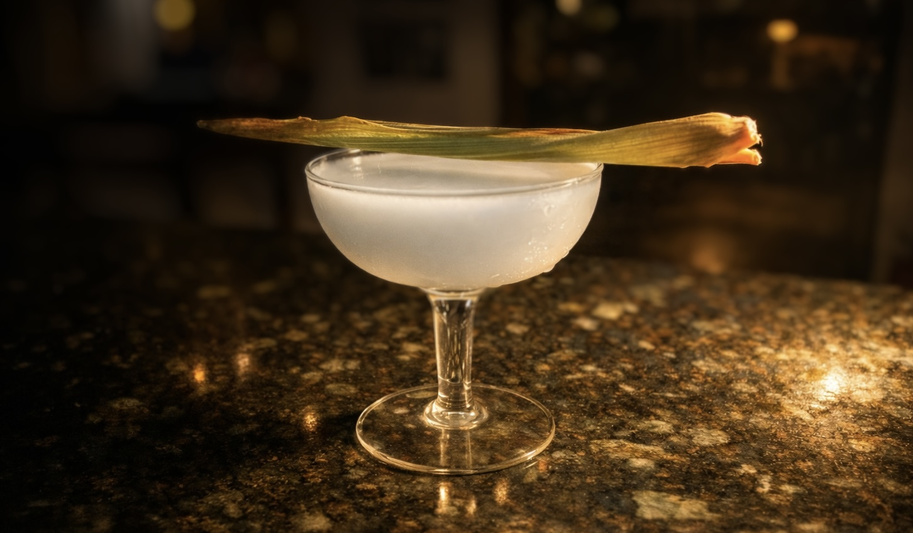
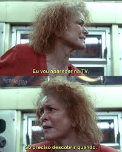
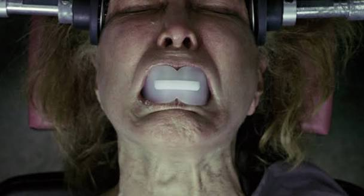
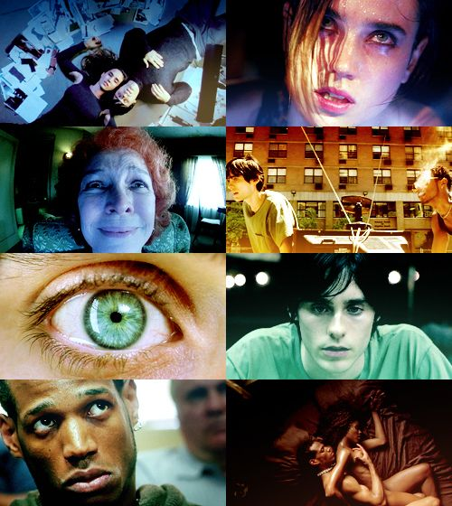

Um grande filme visto coletivamente
Assistimos a Réquiem para um Sonho juntos. A experiência não termina quando sobem os créditos.
O que o desejo de emagrecer pode fazer com a nossa relação com a comida — e com o nosso próprio corpo?
Nesta edição do CineGastronomia, assistimos juntos a Réquiem para um Sonho para investigar como o cinema elabora os discursos gastronômicos que nos atravessam — ideias, desejos, medos e comportamentos que influenciam nossa maneira de comer e de pensar o corpo.
A partir do filme, vamos olhar para uma questão especialmente presente hoje: a popularização das canetas emagrecedoras e a fronteira, nem sempre simples, entre seu uso como recurso no tratamento da obesidade e sua incorporação a uma cultura marcada pela pressão para emagrecer e se adequar a determinados padrões estéticos.

Assistimos a Réquiem para um Sonho juntos. A experiência não termina quando sobem os créditos.
Canetas emagrecedoras, tratamento da obesidade, pressão estética, controle da fome e as mudanças que tudo isso pode provocar em nossa relação com a comida.
Não é uma palestra contra as canetas emagrecedoras. Queremos discutir justamente as tensões entre saúde, tratamento, desejo, estética e comportamento.
O cardápio estará disponível para quem quiser comer ou beber durante a experiência — inclusive com nosso drink de pipoca.

Comidas e bebidas estarão à venda durante a experiência — inclusive nosso drink de pipoca. O consumo é opcional e vendido à parte; não haverá prato ou menu temático inspirado no filme.
Lançado em 2000, Réquiem para um Sonho acompanha personagens atravessados pelo desejo, pela compulsão e pela promessa de transformação. Entre eles está Sara Goldfarb, cuja vontade de emagrecer para aparecer na televisão desencadeia uma relação cada vez mais perturbadora com o próprio corpo e com substâncias prescritas para a perda de peso.
Mais de duas décadas depois, o contexto é outro — e justamente por isso o filme provoca novas perguntas.
Vivemos a popularização de medicamentos que representam um avanço importante no tratamento da obesidade e de outras condições, mas que também passaram a ocupar um lugar de destaque no imaginário contemporâneo sobre magreza, alimentação e controle do corpo.
Onde termina o cuidado com a saúde e começa a pressão para corresponder a um padrão?
Não buscamos chegar à sessão com uma resposta pronta — nem transformar a conversa em um julgamento sobre quem usa ou deixa de usar esses medicamentos. Queremos aproveitar o cinema para observar criticamente os discursos, desejos e contradições que estão sendo produzidos ao redor deles.


O CineGastronomia parte de uma ideia simples: o cinema não apenas mostra o que comemos. Ele também participa da construção das ideias que temos sobre comida, corpo, desejo, prazer, consumo e comportamento.
Em cada encontro, escolhemos um filme para observar como o cinema elabora os discursos gastronômicos que nos atravessam e colocá-los em conversa com questões do nosso tempo.
O cinema abre a discussão; a mesa faz a conversa acontecer.


10 de setembro de 2026
Paulistânia Desvairada · Restaurante Tio Dinho
Rua João Leone, 51 · Sousas · Campinas
Importante: o ingresso dá acesso à sessão e à conversa. Comidas e bebidas são vendidas separadamente. Não haverá prato ou menu temático inspirado no filme.
por pessoa
Comprar bilhete — R$ 30Este botão já marca o ponto de conversão da página. Quando você tiver o link de pagamento, basta substituir o endereço do botão.
Não. O ingresso dá acesso à sessão e à conversa do CineGastronomia. Comidas e bebidas estarão à venda separadamente durante a noite.
Não. A relação entre cinema e gastronomia acontece na investigação dos discursos gastronômicos que o filme elabora e na conversa posterior. Haverá comidas e bebidas à venda, inclusive um drink de pipoca.
Não. O filme é o ponto de partida para uma conversa sobre corpo, comida, emagrecimento, tratamento da obesidade, pressão estética e as contradições que atravessam essas questões.
Não é essa a proposta. A discussão considera tanto seu uso como recurso no tratamento da obesidade quanto os efeitos de sua circulação em uma sociedade marcada pela pressão por determinados padrões estéticos.